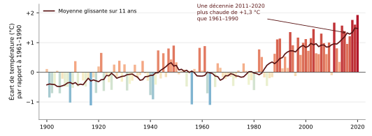
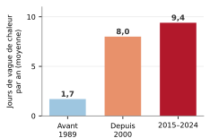

Petit guide pour comprendre l'essentiel — France métropolitaine · données observées et trajectoire à 2100
Le malentendu n°1 à lever d'abord
Météo ≠ climat. La météo, c'est le temps qu'il fait, qui change d'un jour à l'autre — averse, coup de froid, canicule. Le climat, c'est la statistique de ce temps sur environ 30 ans (norme de l'Organisation météorologique mondiale). Conséquence : une vague de froid ponctuelle ne contredit pas le réchauffement, exactement comme une journée fraîche en plein été ne dit rien de la saison. On juge le climat sur la durée, pas sur une journée.
1La tendance de fond : il fait plus chaud, et de plus en plus vite
Depuis le début du XXe siècle, la température moyenne en France métropolitaine a augmenté d'environ +1,7 °C (Météo-France). C'est plus que la moyenne mondiale (de l'ordre de +1,2 °C) : comme tout le continent, la France se réchauffe environ deux fois plus vite que la planète — l'Europe est le continent qui se réchauffe le plus rapidement (Copernicus). Et le rythme s'accélère : la décennie 2015-2024 dépasse de +2,2 °C le début du siècle. La courbe ci-dessous, construite à partir de mesures réelles, le montre d'un coup d'œil.

Température en France métropolitaine, 1900–2020. Chaque barre = l'écart d'une année à la moyenne 1961–1990 (bleu = plus froid, rouge = plus chaud). La courbe sombre lisse les variations sur 11 ans pour révéler la tendance. Source : Berkeley Earth (moyennes nationales annuelles), réf. 1961–1990.
2Des signes concrets, chiffrés et déjà là OBSERVÉ
Années records :2022 est l'année la plus chaude depuis 1900, avec 14,5 °C de moyenne. La quasi-totalité des années les plus chaudes jamais mesurées sont postérieures à 2000.
Canicules plus fréquentes : on compte 52 vagues de chaleur depuis 1947, dont les deux tiers après 2000. Le nombre de jours concernés a explosé (graphique).
Nuits chaudes en hausse : les nuits tropicales (température qui ne descend pas sous 20 °C) se multiplient, surtout dans le Sud et les villes.
Gel en recul : les jours de gel deviennent moins nombreux presque partout.
Sols plus secs : les sécheresses des sols sont plus fréquentes et plus intenses, même quand il pleut autant sur l'année.

Vagues de chaleur : +5×. Jours par an en moyenne. Source : Météo-France (indicateur thermique national).
3L'eau : pas plus de pluie, mais autrement répartie OBSERVÉ
Côté précipitations, le message est plus nuancé — et, honnêtement, plus incertain que pour la température. Le cumul de pluie sur l'année et à l'échelle du pays reste à peu près stable, mais il se redistribue : hivers souvent plus arrosés, étés plus secs, et épisodes intenses renforcés (pluies méditerranéennes, inondations) alternant avec des sécheresses plus longues. Autrement dit : autant d'eau au total, mais qui tombe de façon plus brutale et plus inégale.
4Où va-t-on ? Le cap retenu pour s'y préparer PROJETÉ — SCÉNARIO
Pour planifier l'adaptation, la France a adopté une trajectoire de référence (TRACC) : se préparer à +4 °C en métropole à l'horizon 2100 (et de l'ordre de +2,7 °C dès 2050), ce qui correspond à un monde à +3 °C. Ce n'est pas une prévision certaine : c'est un scénario de planification prudent, inscrit dans le plan national d'adaptation (PNACC-3), pour dimensionner dès aujourd'hui villes, agriculture et réseaux. Le futur réel dépendra des émissions mondiales à venir.
À retenir — en 3 phrases
La météo change chaque jour ; le climat, lui, s'est durablement réchauffé : +1,7 °C en France depuis 1900, et plus vite que la moyenne mondiale.
Les preuves sont concrètes et mesurées : canicules bien plus fréquentes, nuits chaudes en hausse, gel en recul, sols plus secs.
La France se prépare officiellement à +4 °C en 2100 (scénario d'adaptation) ; la pluie, elle, reste la grande inconnue.